Global Trends: Analyzing IDA Credits and Grants Statements
Established in 1960, the International Development Association (IDA) is a division of the World Bank that provides concessional loans and grants to support economic growth, reduce inequalities, and improve living conditions in low-income countries. By targeting the poorest and most vulnerable populations, IDA plays a central role in advancing global development goals.
In this project, I explore regional patterns and high-level trends in IDA funding using the latest Statement of Credits and Grants dataset provided by the World Bank. The data, as of July 15, 2024, covers 10,504 loans associated with 7,530 projects across 137 recipient countries. Using MySQL for querying and Tableau for visualization, the analysis focuses on how funds are distributed by region, how much has been paid back versus remains due, and which countries and regions are most prominent in IDA’s current portfolio. The aim is to provide a concise, data-driven view of where concessional finance is flowing and how obligations are distributed globally.
Key Takeaways
- As of July 15, 2024, the IDA has 10,504 registered loans with a total commitment of approximately $555.2 billion in concessional finance.
- The total amount currently due to IDA on active loans is about $199.1 billion, with South Asian countries accounting for roughly 31% of this outstanding balance. This highlights South Asia as a major locus of IDA’s ongoing credit exposure.
- Borrowers have collectively repaid about $139.2 billion so far, reflecting substantial progress on servicing existing obligations while leaving a large pipeline of future repayments.
- The average service charge rate on loans is only about 0.8%, underscoring IDA’s role as a highly concessional lender focused on development rather than commercial return.
- The average loan size is roughly $44.7 million, with significant variation across regions and countries depending on project scope and economic context.
- Eastern and Southern Africa has received the largest share of total funding at approximately $172.9 billion, consistent with IDA’s focus on lower-income countries and regions facing high development needs.
- South Asian countries owe the largest combined amount to IDA, at around $62.0 billion, reflecting both the scale of financing and the region’s centrality in IDA’s portfolio.
- India has the highest number of loans (441) and projects (407) and has repaid about 61% of its obligations, indicating a long-standing, large-scale engagement with IDA.
- Bangladesh owes the largest outstanding amount, about $19.9 billion, and has so far repaid around 25% of its debt—signalling heavy ongoing reliance on concessional finance for development.
Queries and Visualization
Queries to obtain high-level portfolio metrics:
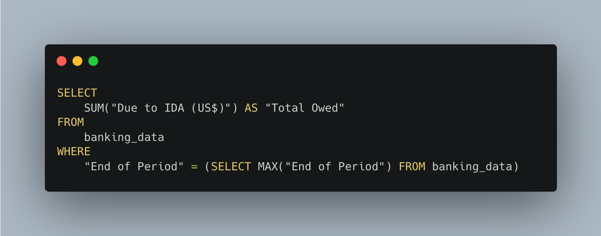
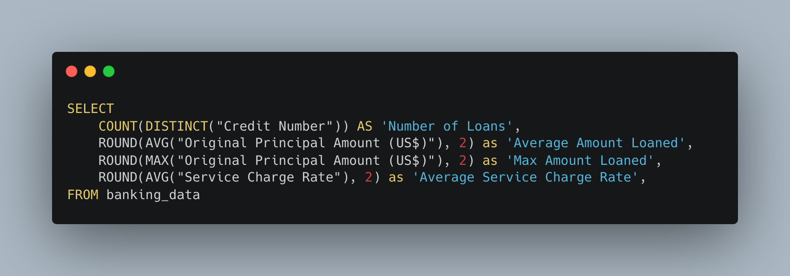
Regional and country-level patterns: visuals and underlying queries
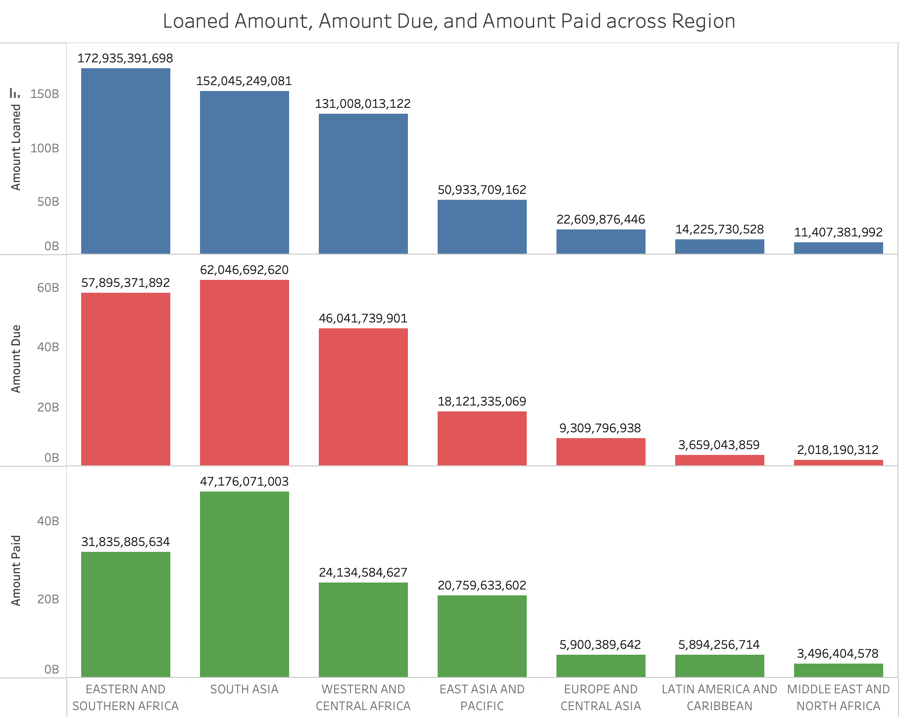
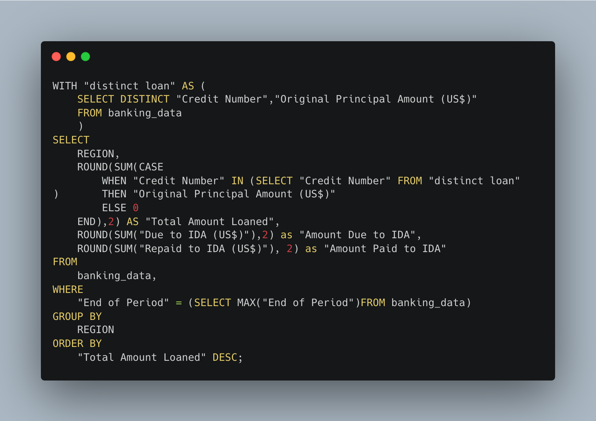
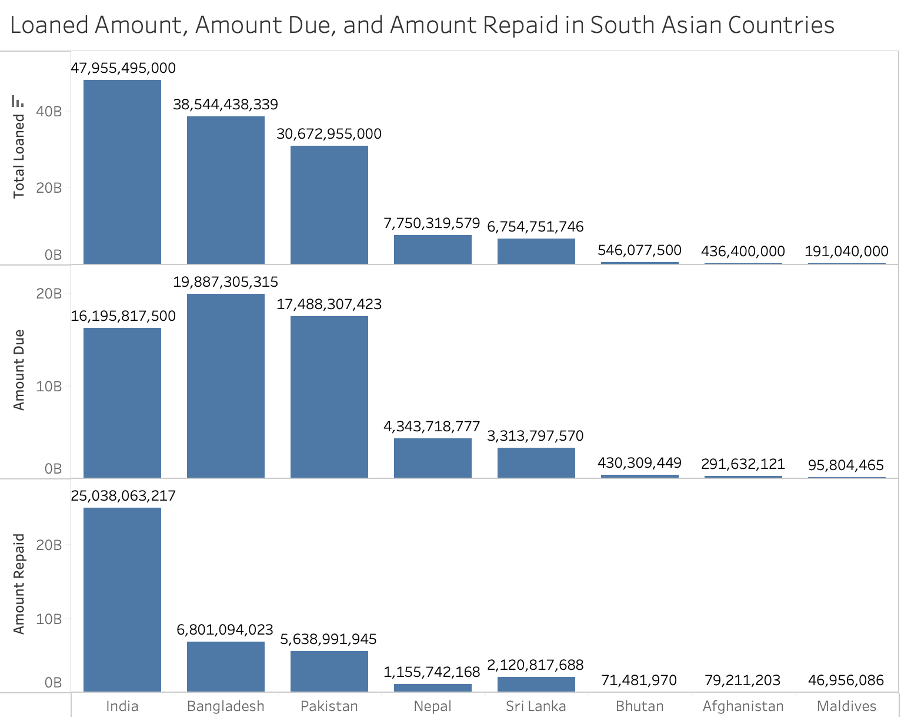
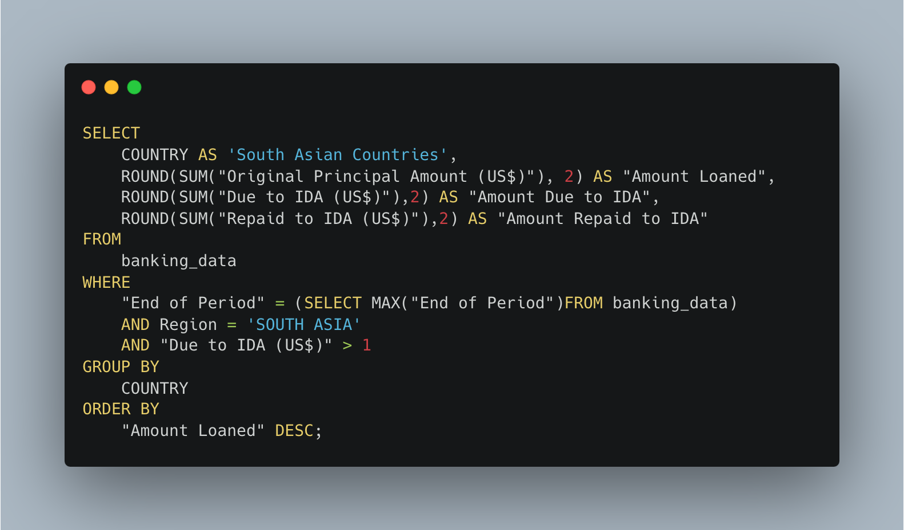
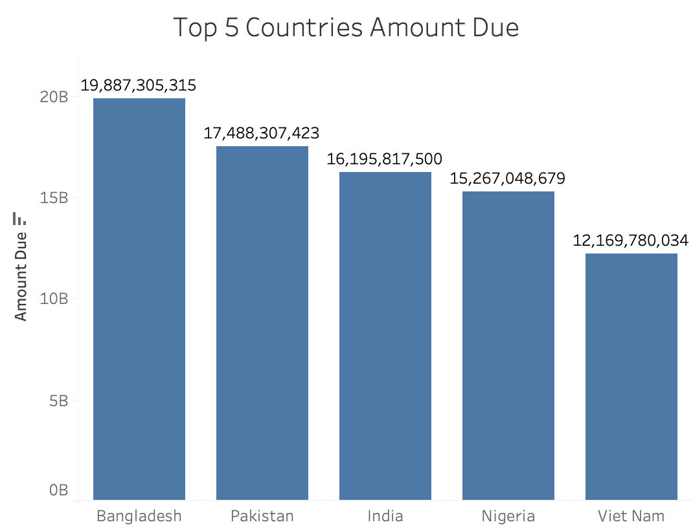
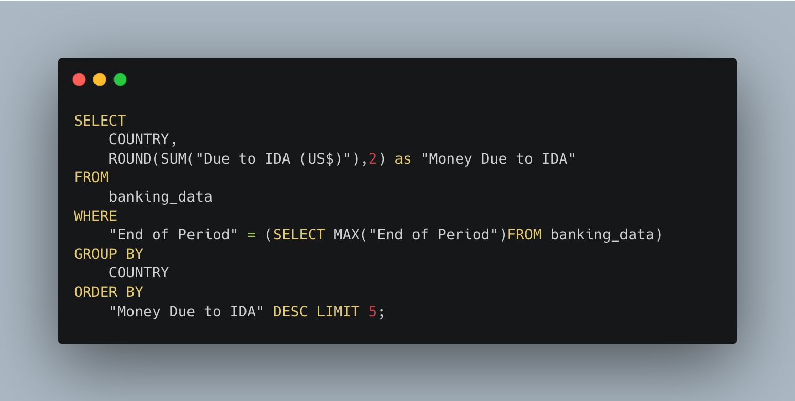
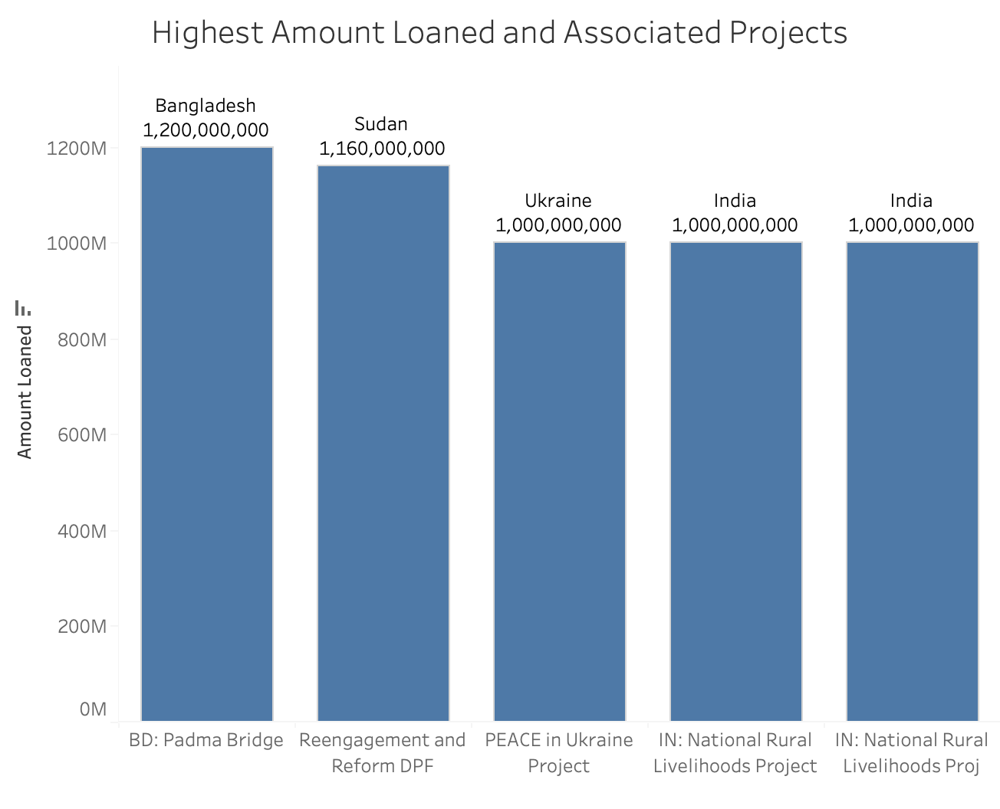
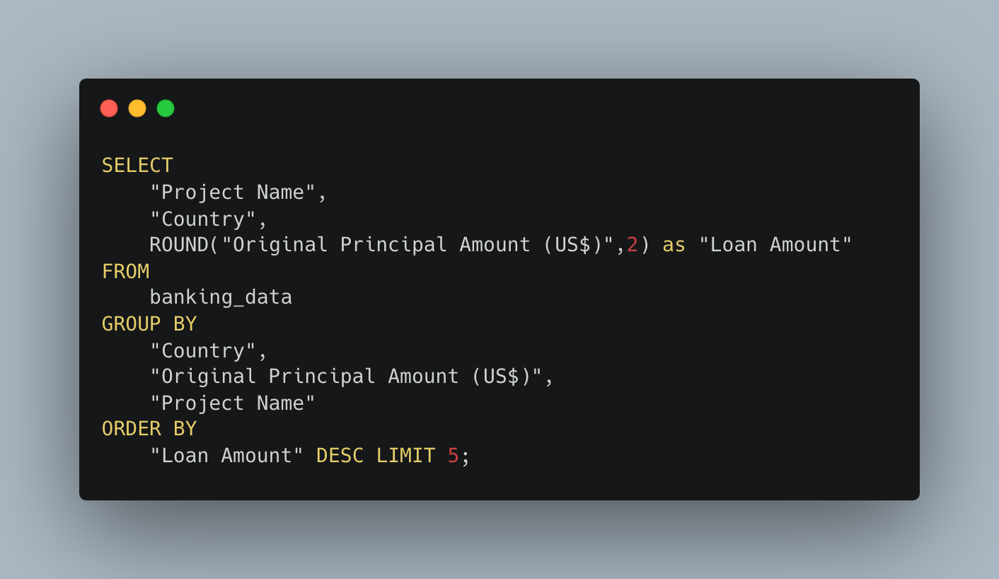
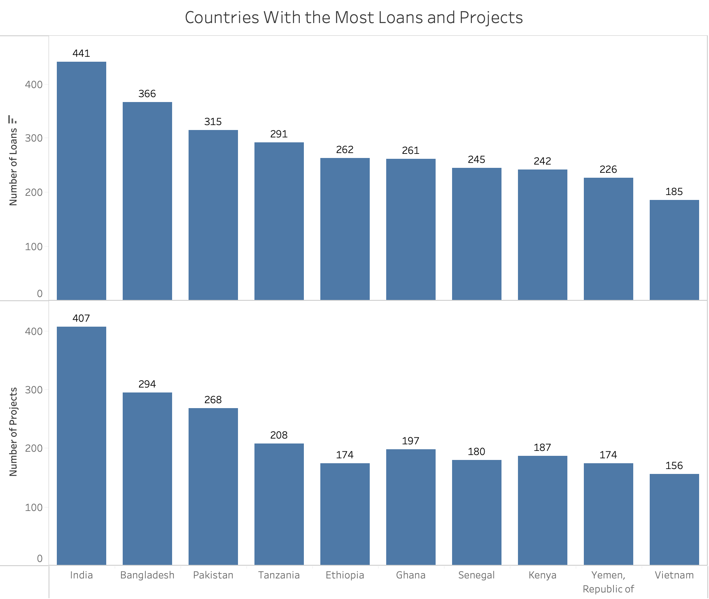
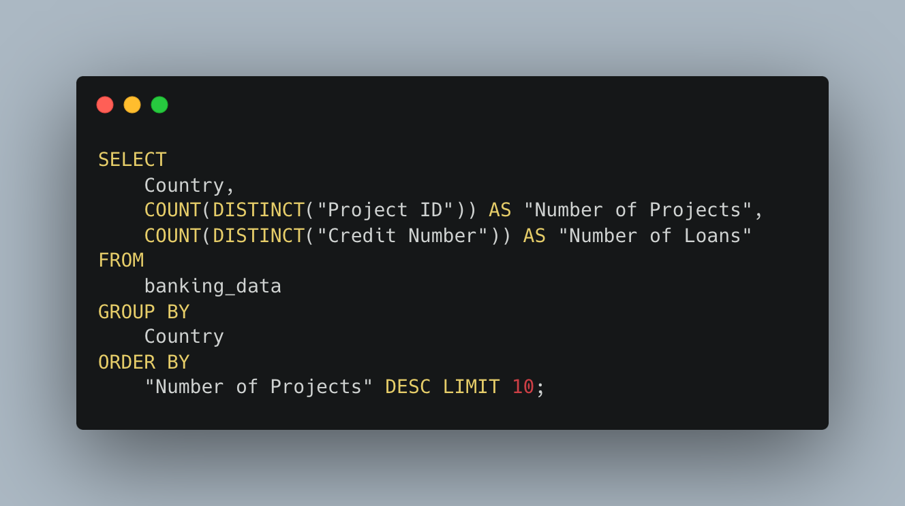